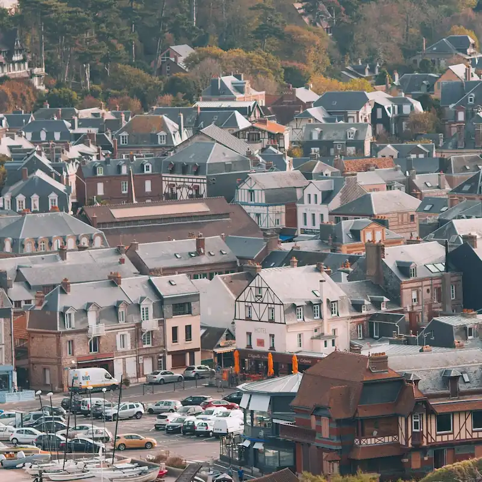

The Ankadikely Chamber of Commerce gathers most of the famous local businesses of Ankadikely. Members of the Chamber are among the most liked and suggested businesses of the town. Therefore, either you are visiting or installing in Ankadikely, The Ankadikely Chamber of Commerce is the best place for you. Discover events of the town Meet our Members
Home
Welcome to the Ankadikely Chamber of Commerce

We welcome everyone!
The Ankadikely Chamber of Commerce offers many benefits to its members: promotion among the population, recognition, sponsorship by the Chamber and other companies, special attendace to town's various events, showcase and spotlight and many others ... . So what are you waiting to become a member of the Chamber? Join Us →Actual Event
Ankadikely's Annual Festival
Join us for The Ankadikely's Annual Festival, an exciting community celebration bringing together residents, families, and visitors to honor the rich culture, spirit, and heritage of Ankadikely! This year's gathering features a dynamic lineup of local music, traditional dance performances, vibrant artisan craft markets, and interactive activities for all ages. Whether you come to sample delicious local food, enjoy live entertainment, or connect with neighbors and local business owners, the festival promises a memorable experience filled with joy, community pride, and togetherness. Mark your calendar and join the festivities as we celebrate everything that makes Ankadikely such a special place to live, work, and visit! Learn More →
Current Weather in Ankadikely
Ankadikely, Antananarivo, MDG
——
Degree
——
Humidity
——
——
Speed
——